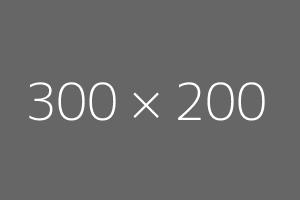

During the EPICS Heat Resilience Challenge (August 2020–May 2021) at ASU, I collaborated with a community partner at Westwood mobile home park to combat excessive heat. As sub-team lead, I analyzed cooling options like reflective coatings and ventilation systems, then designed and prototyped a small-scale mobile home unit with an optimized airflow system using CAD tools. This hands-on project blended engineering innovation with community impact, creating a practical, scalable solution to enhance heat resilience in vulnerable living spaces.
